HTTPS Redirect
0. はじめに
vServerのvip宛にHTTPでアクセスがあった場合に、HTTPSにリダイレクトする設定を確認します。
参考： レスポンダーを使用して HTTP リクエストを HTTPS にリダイレクトする方法
1. VPXの設定
まず、レスポンダー機能を有効にします。
System > Settings
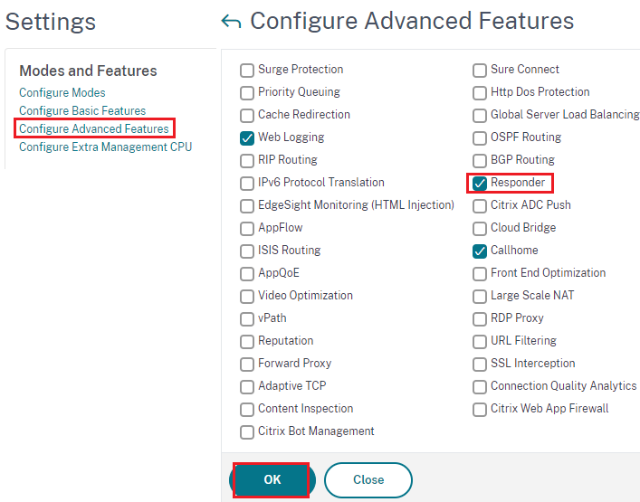
レスポンダーアクションを設定します。
後述のレスポンダーポリシーにmatchしたトラフィックに対して行う操作を定義します。
ここで設定している内容は、URLのプロトコル以降をそのままに、プロトコルだけを https:// に置き換えています。
AppExpert > Responder > Actions
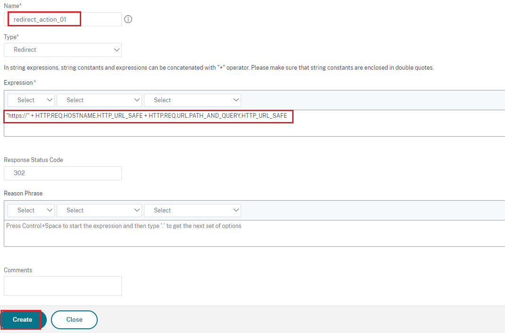
レスポンダーポリシーにはHTTPリクエストパケットがmatchするように設定します。
なお、version13.1にはGUIだと設定できないバグがあるみたいなので、14.1以降を使用するか、CLIで設定してください。
AppExpert > Responder > Policies
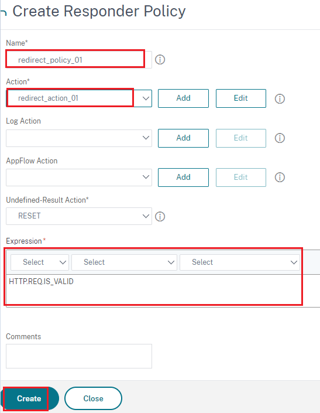
HTTPを受けるvServerはリダイレクト処理を行うため常にUPしている必要があります。
また、HTTPでアクセスしてきたパケットはサーバ側へルーティングしてはいけません。
そこで、自身のloopbackを宛先にしたモニタを設定し、それを紐づけたServiceを定義します。
vServerには常にUPになるように設定したServiceをbindします。
Traffic Management > Load Balancing > Monitors
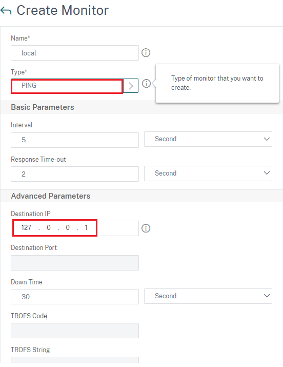
Serviceに設定するIPはどこにも使われていないIPを指定します。
Monitorsには先程定義したモニタを指定します。
Traffic Management > Load Balancing > Services
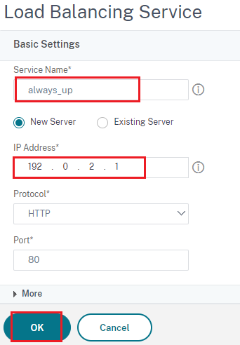
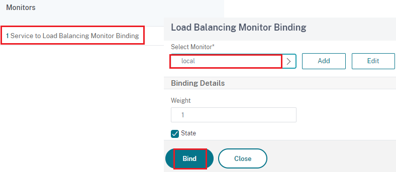
vServerのプロトコルはHTTP、リダイレクト先のHTTPSに対応するvServerと同じIPにします。
Traffic Management > Load Balancing > Virtual Servers
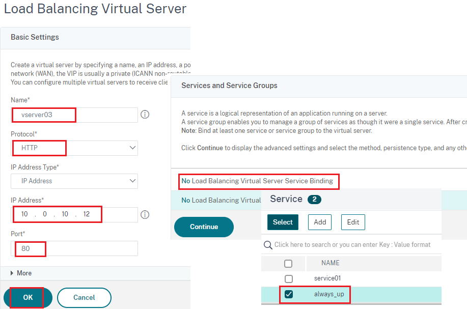
定義したレスポンダーをvServerに紐づけます。
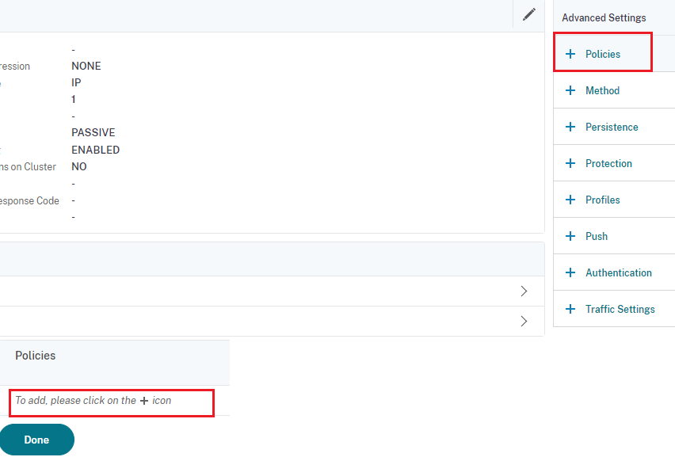
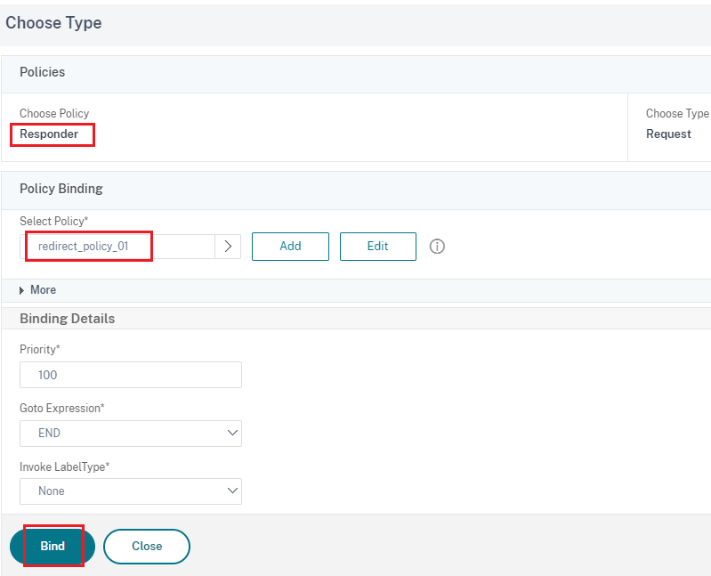
2. 確認
SSLで受けるvServerに合わせたweb serverを起動します。
python3 -m HTTP.server 8080
クライアント側のブラウザからHTTPでアクセスするとHTTPSにリダイレクトされていることが確認できました。
 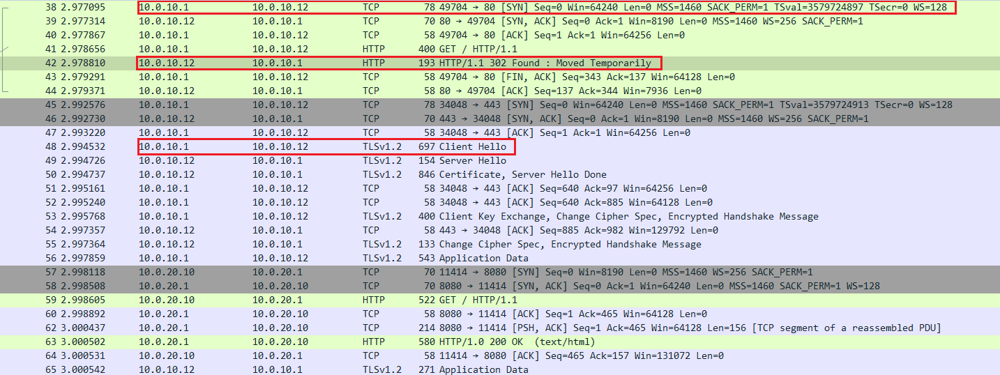
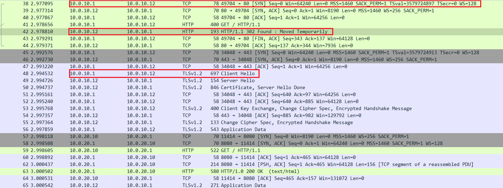